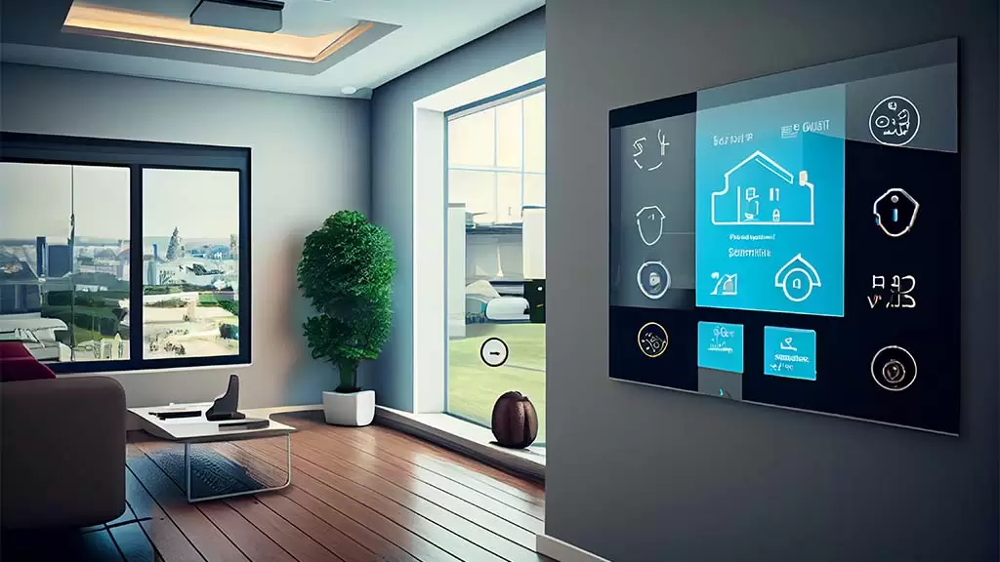

A tecnologia é um conjunto de artifícios que usamos para facilitar a nossa vida, indo desde rampas e escadas até dispositivos eletrônicos.
A tecnologia molda nosso dia a dia e está em nossas casas ao simplificar a comunicação e tarefas, com exemplos como smartphones, assistentes virtuais e eletrodomésticos inteligentes, além de otimizar atividades como finanças, compras e entretenimento, embora o uso excessivo também gere desafios de interação social e bem-estar
Vivemos intensamente conectados aos aparelhos eletrônicos. Perdemos o hábito de andar e escolhemos nos locomover por automóveis. A tecnologia nos tornou mais sedentários e nos fez abandonar costumes como caminhar, buscar o próprio alimento e socializar com outras pessoas. Com o uso constante da tecnologia, nos acomodamos em casa e esquecemos o mundo ao nosso redor. Porém, o avanço tecnológico também trouxe benefícios, como o desenvolvimento da medicina